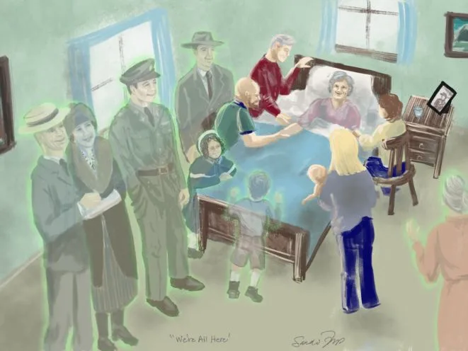

Expanded Nursing Uganda Explanation
Nearing death awareness should be understood beyond a short definition. Link the concept to patient history, focused assessment, common risks, nursing priorities, documentation and evaluation of outcomes.
01 Nearing death awareness
Near death awareness (NDA) is a term to describe a dying person’s experiences of the dying process. It refers to a variety of experiences such as end of life dreams or visions.
Their attempts to share the wonders of these experiences are often obstructed by our lack of understanding of the symbolic language they use. Often they are talking while the experience is actually happening.
When nurses are equipped with the tools to recognize this type of communication, they may experience the benefit of participating in this transformative process.
02 **Signs of Near Death Awareness (NDA)**
Near Death Awareness (NDA) is a phenomenon that occurs when individuals approach the end of their lives. It is characterized by a variety of signs and experiences, including:
- Communication with the Deceased : individuals claim to have spoken with someone who has already passed away. They may describe vivid conversations with deceased loved ones, feeling their presence or receiving messages from them. These encounters can bring comfort and reassurance, as patients find solace in the belief that their departed loved ones are near and supporting them during this transitional phase.
- Interaction with Unseen Beings : Patients experiencing NDA might engage in conversations or interactions with people who are not visible to others present in the room. These unseen beings may be described as spiritual guides, angels, or companions that accompany the individual on their journey. While these interactions cannot be objectively observed, they hold deep personal significance for the individual, often providing a sense of guidance and companionship during their final days.
- Visions of a Serene Place : Another remarkable aspect of NDA is the description of a beautiful and luminous place that patients perceive during their experiences. They may talk about seeing a serene landscape, often described as a garden, meadow, or heavenly realm. These visions evoke a sense of peace, tranquility, and transcendence, offering patients a glimpse of the potential beauty that awaits them beyond life.
- Gestures and Reaching for Unseen Objects : Patients in the throes of NDA may exhibit physical gestures such as reaching out, grasping for unseen objects, or waving to invisible beings. These actions suggest a heightened awareness and interaction with a realm beyond the tangible world. While these gestures may appear puzzling to observers, they hold deep significance for the individuals experiencing them, reinforcing their connection to a reality that lies beyond our immediate perception.
- Encounters with Spiritual Beings : NDA experiences often involve encounters with spiritual beings beyond deceased loved ones. Patients may describe encounters with angels, religious figures, or entities associated with their personal spiritual beliefs. These encounters can elicit profound feelings of awe, reverence, and a strengthened connection to the divine.
- Confusion and Disorientation : It is common for individuals undergoing NDA to exhibit periods of confusion and disorientation. This can be attributed to the shifting boundaries between the physical and spiritual realms. Nurses and caregivers should approach these episodes with patience and understanding, providing reassurance and a calming presence to alleviate any distress experienced by the patient.
- Symbolism of a Journey : In the context of NDA, patients may express a sense of embarking on a significant journey or trip. They may speak metaphorically about preparing for departure, gathering their belongings, or anticipating a transition to a different realm. These symbolic references reflect their understanding and acceptance of the impending end of life and can serve as a powerful coping mechanism for patients as they navigate this profound phase.
- Foreknowledge of Death : Perhaps one of the most bewildering aspects of NDA is when individuals accurately predict the exact timing of their death. Some patients may express an intuitive awareness of when their journey will come to an end. While this may seem inexplicable, it is crucial for healthcare professionals to approach such statements with respect and sensitivity, acknowledging and exploring the patient’s feelings and beliefs surrounding their impending passing.
In Summary; People who are experiencing nearing death awareness may:
- Say that they have spoken to someone who has already died • Converse with people who are not visible to you • Describe another place of beauty and light • Reach or grasp for unseen objects, wave to unseen beings, and/or make hand gestures • Describe spiritual beings • Appear confused and disoriented • Talk about taking a trip or going on a journey • Tell you exactly when they will die
These behaviors do not mean that they are hallucinating, confused, or having reactions to medications. They often have specific meaning to the patient’s life, and the person who is closest to the patient may best understand what is being said and what it means.
03 Roles of a Nurse during Nearing Death Awareness:
- Providing Presence and Support : One of the primary roles of a nurse during Nearing Death Awareness is to be present with the person. The nurse should sit with them, offering a calm and supportive presence. This allows the patient to feel secure and encourages them to communicate if they wish to.
- Facilitating Communication : Nurses can play an active role in facilitating communication during Nearing Death Awareness. They can ask open-ended questions such as, “Who do you see?” or “What are you seeing?” This encourages the patient to share their experiences and perceptions. Additionally, asking about their emotional state by inquiring, “How does that make you feel?” helps the patient express their emotions related to the visions or experiences they are having.
- Active Listening and Validation : It is important for the nurse to actively listen to the patient’s experiences and validate them. Rather than dismissing or doubting what the patient is sharing, the nurse should acknowledge and accept their perceptions as real and meaningful. Validating their experiences can provide comfort and reassurance to the patient during this vulnerable time.
- Avoiding Contradiction or Argumentation : Nurses should avoid contradicting, explaining away, or arguing with the patient about their experiences. Even if the experiences seem unusual or impossible to the nurse, it is crucial to respect the patient’s beliefs and perceptions. Engaging in arguments or attempting to rationalize their experiences may cause distress or feelings of invalidation for the patient.
- Collaborating with the Hospice Team: Nurses should maintain open communication with the hospice team regarding the patient’s Nearing Death Awareness experiences. Sharing these communications with the interdisciplinary team, which may include physicians, social workers, counselors, and spiritual care providers, allows for a holistic approach in supporting the patient. Collaborating with the team ensures that the patient receives comprehensive and coordinated care during this delicate phase.
04 **Supportive Methods for Near-Dying Patients:**
- Pain Management 💊 : Ensure effective pain control to keep the patient comfortable.
- Emotional Support 🤗 : Offer emotional reassurance and a listening ear to address their fears and concerns.
- Spiritual Care 🙏 : If the patient is spiritual or religious, provide spiritual support.
- Hospice Care 🏡 : Consider transitioning to hospice care for specialized end-of-life support.
- Companionship 👫 : Ensure the patient is not alone and has companionship.
- Dignity and Respect 🙌 : Uphold their dignity and respect their preferences.
- Communication 🗣️ : Communicate openly about the patient’s condition and prognosis.
- Hygiene and Comfort 🛀 : Keep the patient clean, comfortable, and well-cared for.
- Nutrition and Hydration 🥗 : Provide adequate nutrition and hydration as needed.
- Quality of Life 🌟 : Focus on improving the patient’s quality of life and making their remaining time meaningful.
05 **Advice for Family and Caretakers:**
- Emotional Support 🤗 : Offer love, comfort, and a reassuring presence to the patient.
- Respect Wishes 🤝 : Respect the patient’s end-of-life decisions and preferences.
- Effective Communication 🗣️ : Keep open and honest communication within the family.
- Self-Care 🧘 : Care for your own well-being to provide the best support to the patient.
- Religious and Spiritual Support 🙏 : If the patient is religious, help them connect with their faith.
- Create Memories 📷 : Spend quality time together and create meaningful memories.
- Coordinate with Healthcare Providers 🏥 : Collaborate with healthcare professionals for optimal care.
- Address Pain and Symptoms 💊 : Ensure the patient is comfortable and free from distressing symptoms.
- Make Legal and Financial Arrangements 💼 : Address legal and financial matters as needed.
- End-of-Life Planning ✍️ : Discuss and plan for the patient’s end-of-life care and preferences.
06 Nursing Uganda Clinical Lens
Use Nearing death awareness as a practical nursing topic, not only a memorized definition. Focus on comfort, dignity, symptom control, communication and family support.
- What to understand first: define nearing death awareness, identify the normal or expected pattern, then explain what changes when the patient is unwell.
- Why it matters in care: the nurse must recognize risk early, explain findings clearly, document accurately and know when to escalate.
- How to revise it: connect each point to assessment, nursing diagnosis or care problem, intervention, rationale and evaluation.
07 Assessment Guide
- Pain and other symptoms, function, sleep, appetite, mood, spiritual distress and family concerns.
- Medication response, side effects, wound or skin needs and end-of-life preferences.
- Caregiver burden, home resources and urgent red flags.
08 Nursing Priorities, Rationales and Outcomes
- Relieve distressing symptoms and prevent avoidable suffering.
- Communicate honestly, respectfully and at the patient's pace.
- Support family care, medication access, dignity and continuity.
The rationale for these priorities is patient safety: nursing actions should prevent deterioration, reduce discomfort, support recovery and create clear evidence for the next caregiver.
- Expected outcome: Symptoms are better controlled, patient preferences are respected and the family knows when to seek help.
09 Patient Teaching and Revision Check
- Explain nearing death awareness in simple language the patient or caregiver can repeat back.
- Teach warning signs, medicine or follow-up instructions, hygiene or lifestyle points where relevant.
- For exams, prepare a short answer using: definition, causes or risk factors, signs, assessment, management, complications and prevention.
- For ward practice, document baseline findings, actions taken, patient response and the plan for review.
Illustrations and Diagrams (5)



Related Video Lectures
Watch nursing lecture videos on YouTube for this topic. Opens in a new tab.
Watch on YouTubeExternal link: YouTube may use its own cookies and terms. Nursing Uganda is not affiliated with YouTube.